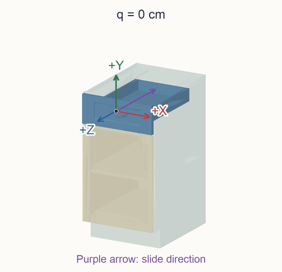
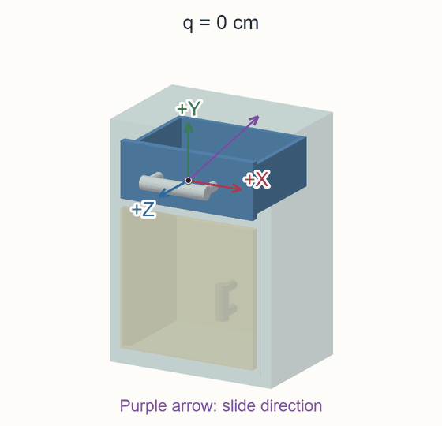
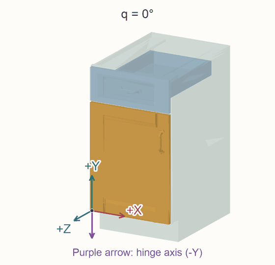
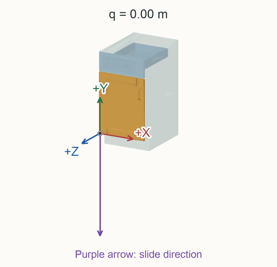
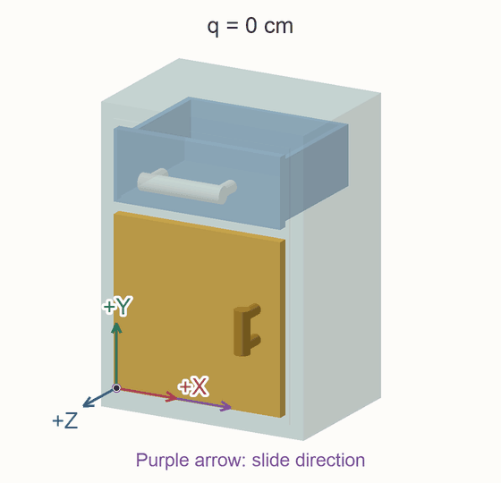
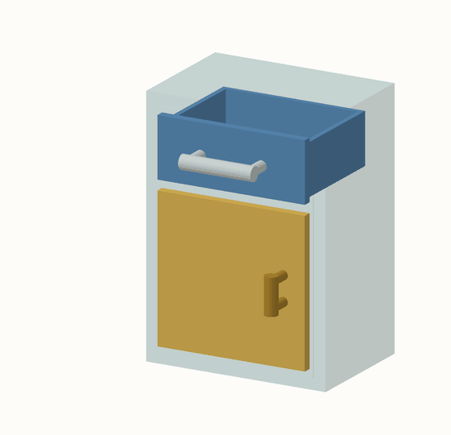
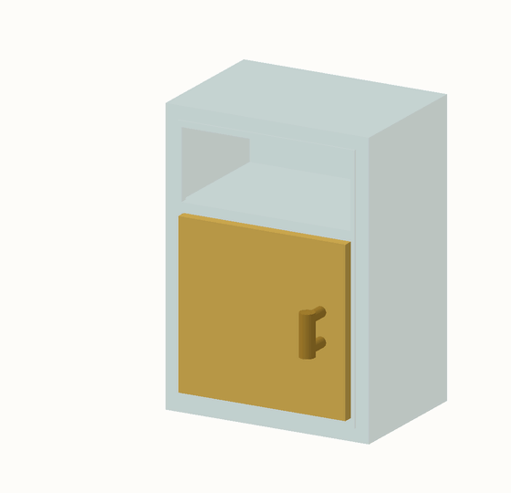
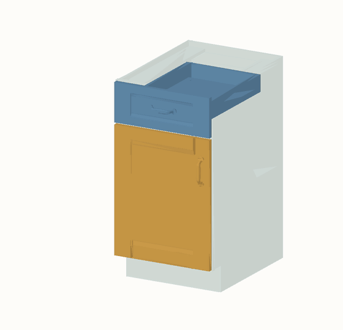
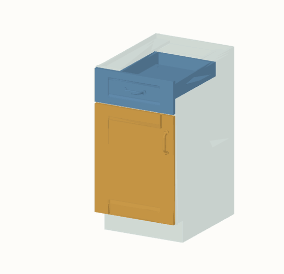

3.5 What happens when we change the URDF?
Use the same cabinet to see what changes when we edit its joints and shapes.
3.5.1 Change the drawer’s direction
The drawer’s axis tells it which way to slide. Here we change only that direction. The starting point and the 0–76 cm travel range stay the same.
The +X, +Y, and +Z arrows show the joint’s reference directions at its closed pose. In this cabinet, +X points sideways, +Y points up, and +Z points out of the front. These are the joint’s local axes; the scene can use a different up axis. The purple arrow shows the chosen sliding direction.
Out of the cabinet

<axis xyz="0 0 1" />Into the cabinet


<axis xyz="0 0 -1" />Along a diagonal


<axis xyz="0.707107 0.707107 0" />Read xyz in order: X, then Y, then Z. The two equal positive numbers mean “move sideways along +X and upward along +Y by equal amounts.” The final 0 means no movement along Z.
For example, after sliding 10 cm along the purple arrow, the drawer has moved about 7.1 cm sideways and 7.1 cm upward.
This is still one degree of freedom. The drawer follows one straight line. It cannot choose its upward and sideways movements separately.
One number, q, tells us how far it has moved along that line.
The cabinet is transparent so you can see the path. These animations follow the motion written in the file; they do not stop parts at collisions.
3.5.2 Turn a hinged door into a sliding door
For a hinge, axis gives the line the door rotates around. For a slide, it gives the direction the door moves along. Changing revolute to prismatic also changes the limit from an angle to a distance.
Original hinged door


type="revolute"
<axis xyz="0 -1 0" />
<limit lower="0" upper="1.5708" />Change only the type


type="prismatic"
<axis xyz="0 -1 0" />
<limit lower="0" upper="1.5708" />Make it slide sideways


type="prismatic"
<axis xyz="1 0 0" />
<limit lower="0" upper="0.7" />We change three things together:
- Type: slide instead of rotate.
- Axis: move sideways instead of downward.
- Limit: travel 70 cm.
The door still has one DOF. Its q now measures distance instead of angle.
3.5.3 Remove the drawer
To remove this drawer, delete both its link and the joint connecting it to the cabinet.
With the drawer


Cabinet body ├── Drawer · joint_0 └── Door · joint_1
Without the drawer


Cabinet body └── Door · joint_1
In this file, remove the entire <link name="link_0"> block and the entire <joint name="joint_0"> block.
Deleting only the link would leave a joint pointing to a drawer that no longer exists. Deleting only the joint would leave the drawer disconnected.
This drawer has no parts attached beneath it in the tree, so the other connections can stay as they are.
3.5.4 Swap the shapes, keep the joints
What if the drawer used the door’s joint, and the door used the drawer’s joint?
Original shapes


Shapes swapped


The joint sets the movement, whatever shape we attach to it. Calling a link “drawer” or giving it a drawer shape does not automatically make it slide.
| Link and joint | Original shape | New shape |
|---|---|---|
link_0 · sliding joint | Drawer | Door panel |
link_1 · hinge joint | Door panel | Drawer |
For this example, we exchange the two links’ visual and collision blocks. We also adjust their placement offsets so both shapes still start in the same closed positions. The joints keep their original locations, directions, and limits.
The result is an unusual cabinet, but it makes the roles clear: the shapes describe the parts; the joints describe their movement.